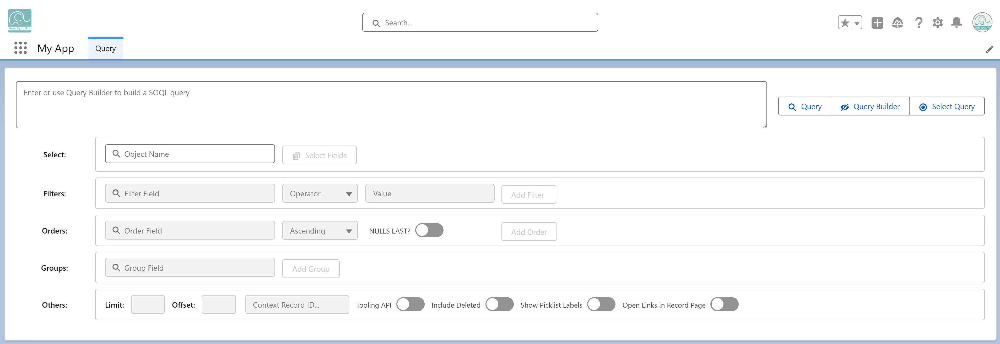

Any user with at least the DSP: Data Sync Pro Starter permission set can access Query Manager — either from the Query tab in the App Launcher or through the Query LWC embedded in Lightning pages.
For Data Lists defined in Executables, users need extra read access to the Executable records that define those lists.
